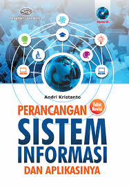
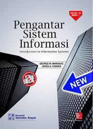

Pengertian Sistem Informasi dan Contoh pada Dunia Industri
Teknologi dan Manusia saat ini menjadi satu kesatuan yang tidak dapat dipisahkan.
Dimana, kedua faktor saling berkaitan dan dapat digabung menjadi sebuah sistem.
Istilah populer untuk saat ini dinamakan sistem informasi.
Berikut adalah buku tetang Sistem Informasi:


Buku Sistem Informasi